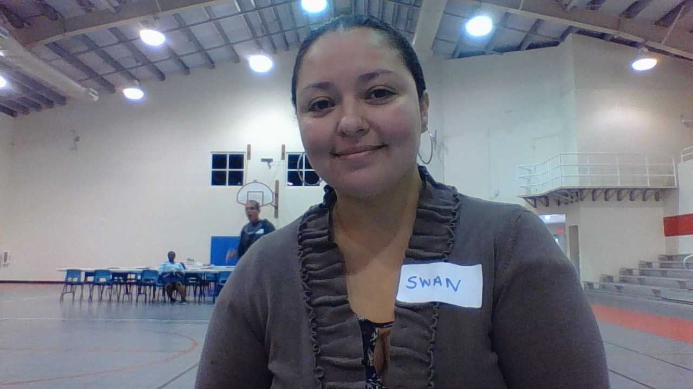

I believe Coding is a really interesting and huge industry that was a little scary at the beginning but little by little I hope to continue learning; between me and you I think I’m getting the hang :grinning:of it. About my personal interests I love cooking and comedy movies, in my spare time I look videos about complicated recipes from scratch, prepare all my ingredients that I will need and then voila I think I’m a chef at Heart!!

My interest are all about cars, bikes and planes. I also love cooking I can share some of my recipes
I’m also fond of dogs, fishes and birds.
So if ever you need something to ask about cars, cooking, or dogs I am happy to help
A quiet, intellectual young man, born and raised in Grand Cayman. Not given to seeking excitement in the coliseums and
circuses, Richard tends to keep to himself, observing the world around him with a curious eye. He can often be found
expanding his mind through his books, or testing it with his games.
In reality Troy is the biggest costume wearing Star Trek fan you would want ever want to meet. He’s also a volleyball coach who would love to teach you to play the best game in the world…the only game worth playing really. If you play any other sports all I have to say to you is…Live long and prosper.